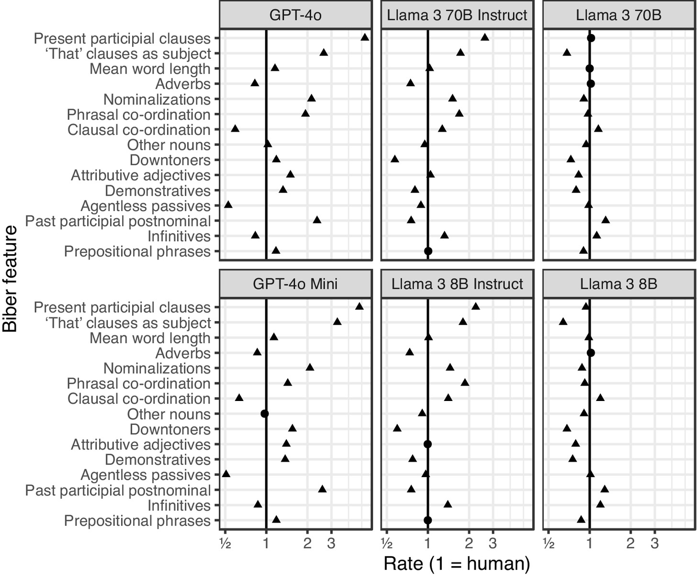
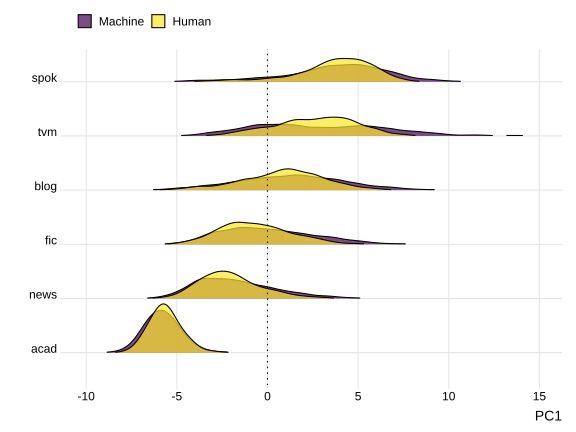
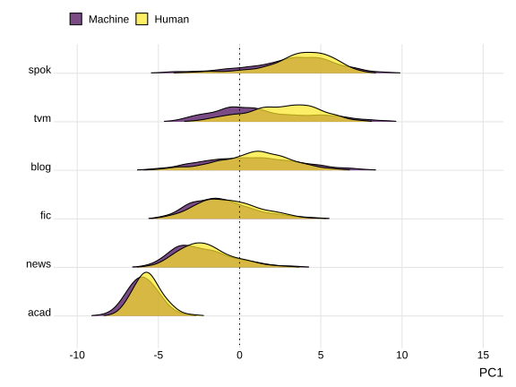
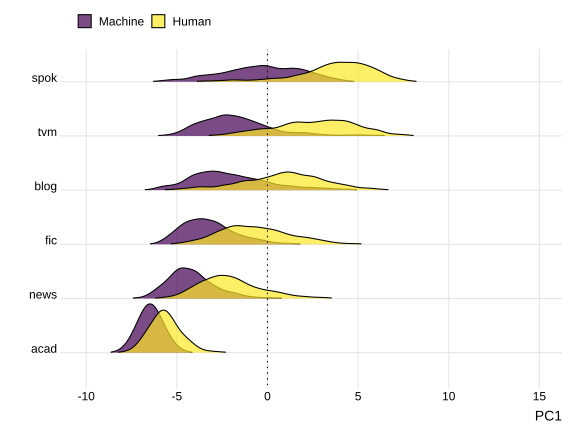
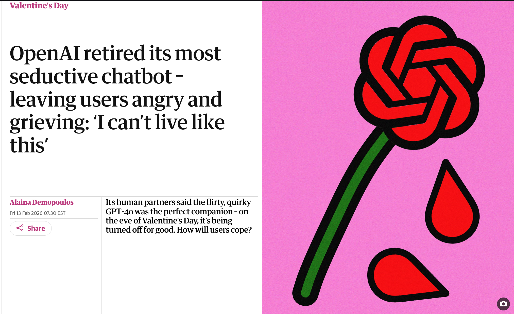
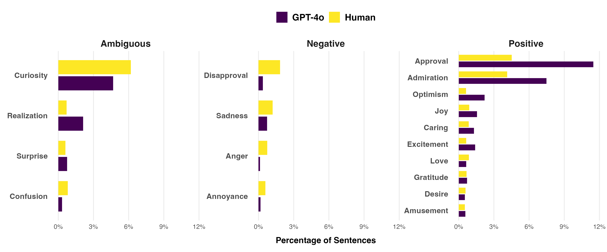
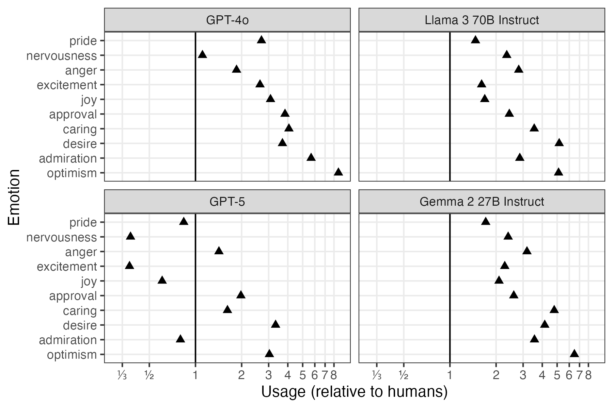

Beyond the “Feeling” of AI
A Multidimensional Sentiment Analysis Approach to Understanding and Teaching About LLM-Generated Academic Writing
![]()
Carnegie Mellon University
New Jersey Institute of Technology
Carnegie Mellon University
February 19, 2026
The Challenge
The Pedagogical Problem
“Something feels wrong about this writing…”
Writing instructors increasingly report an intuitive “feeling” that something is wrong with LLM-generated academic writing:
- Inappropriate tone
- Excessive positivity
- What researchers call “sycophancy” (e.g., Singh et al. 2026; Perez et al. 2022)
But this intuition leaves us helpless:
- No concrete language to discuss with students
- No systematic methods to identify differences
- Vague warnings: “This doesn’t sound right” or “ChatGPT doesn’t write like a scholar”
Why This Matters
Students need more than warnings
The reality:
- Students are already using LLMs for academic writing
- Need accessible frameworks to understand how and why LLM writing differs
Our approach:
Transform impressionistic observations → teachable knowledge
Using multivariate sentiment to make visible what experienced writers intuitively recognize
Our Approach
Background

- LLMs have stylistic expressions that are distinct from human writers.
- Those tendencies are exaggerated through model tuning (RLHF).
- Model families have their own stylistic “fingerprints” (Reinhart et al. 2025).
Background
←
More Information Production
→
More Involved
Background
←
More Information Production

→
More Involved
Background
←
More Information Production

→
More Involved
Background
←
More Information Production

→
More Involved
Background

Research Questions
1. How do LLMs differ from human academic writing in emotional expression?
- What patterns of sentiment distinguish LLM outputs from human texts?
- How pronounced are these differences in academic registers?
2. How do different LLM models compare?
- Are emotional patterns stable across models?
- What does this variability mean for pedagogy?
The HAP-E-2 Corpus
Human-AI Parallel Corpus in English
Design:
- 8,290 human-authored texts
- Reproduced across 12 LLM models
- 6 registers: blog, TV/movies, spoken, fiction, news, academic
Parallel construction:
- Human text (≈500 words) → seed prompt for LLM
- LLM generates next 500 words
- Compare: what actually follows vs. what model produces
Why this matters: More comparable than arbitrary human vs. AI samples
Why Sentiment Analysis?
Advantages over traditional approaches
Dictionary-based stance/engagement studies:
- Excellent for specific lexical patterns (e.g., hedges, boosters)
- Provide concrete lexical bundles for teaching
- Limited to predetermined word lists
Multivariate sentiment analysis:
- Captures broader affective range (28 emotion categories)
- Uses contextual understanding (not just word lists)
- More intuitive for students: “approval,” “admiration,” “disapproval”
- Reveals patterns dictionary searches miss
The GoEmotions Model
28 emotion categories
| Category | Emotions |
|---|---|
| Positive | admiration, amusement, approval, caring, desire, excitement, gratitude, joy, love, optimism, pride, relief |
| Neutral | curiosity, confusion, neutral, realization, surprise |
| Negative | anger, annoyance, disappointment, disapproval, disgust, embarrassment, fear, grief, nervousness, remorse, sadness |
BERT-based model trained on 58,000 human-annotated Reddit comments
Each sentence gets probability scores across all 28 categories (not mutually exclusive)
What GoEmotions Captures (and Doesn’t)
Affordances and limitations
Limitation: Misses subtle stance markers
Human academic sentence (Hyland 2005):
“In the chaparral at least, low temperature episodes usually result in gradual freeze-thaw event.”
GoEmotions: 97% neutral
✗ Hedges and scope limiters read as neutral
Affordance: Captures overall tonal quality
GPT-4o academic sentence:
“Such an approach exemplifies a necessary shift that can significantly strengthen our collective resolve against the looming impacts…”
GoEmotions: 99% approval
✓ Evaluative language drives emotional valence despite hedge word
GoEmotions complements dictionary approaches: reveals register-level appropriateness beyond specific lexical choices
Results: GPT-4o Case Study
Overall Patterns Across All Registers
GPT-4o vs. Human Writing

- GPT-4o uses 2x more approval and admiration than human writers
- Less neutral language overall (neutral emotion not shown in chart)
- Reduced negative emotions (disapproval, sadness)
Academic Register: The Stark Difference
A much more pronounced gap
Human academic writing:
- 88.6% neutral language
- 8.3% approval, 1.0% admiration
- Careful, hedged claims
GPT-4o academic writing:
- 65.5% neutral language (-23 percentage points!)
- 31.7% approval, 5.5% admiration
- Emphatic, broad evaluations
The Quality of Approval Matters
Not just how much, but how it’s expressed
Human academic writer (hedged, scoped):
“International mobility may, in turn, have a positive impact on large distance collaborations as mobile inventors act as bridges across teams…”
GPT-4o (emphatic, broad scope):
“The marriage of these approaches fosters a more nuanced appreciation of the Earth’s complex systems, empowering us to address the pressing environmental and engineering challenges of our time.”
Both tagged as “approval” — but the register appropriateness differs dramatically
Sycophancy Quantified
What instructors intuitively recognize
GPT-4o doesn’t just use more positive language — it expresses emphatic approval in contexts where human academic writers employ:
- Hedges (may, might, could)
- Carefully scoped claims (specific, limited contexts)
- Neutral or slightly positive evaluations
This mirrors common novice writing problems:
- Claims that are too broad
- Excessive enthusiasm without supporting evidence
- Inappropriate emotional intensity for academic contexts
Model Comparison
Different Models, Different Emotions
Academic register across 4 LLMs

Rate of emotions relative to human usage (1 = human usage rate)
The Instability Problem
Emotional patterns shift with model updates
GPT-4o → GPT-5 Mini:
- Admiration: Decreased (5.5% → 0.8%)
- Approval: Still high, but reduced (31.7% → 16.3%)
- Optimism: Dropped from 8x human levels → 3x
“The Day ChatGPT Went Cold” (Freedman 2025):
- OpenAI “fixed” excessive positivity
- Users complained new version wasn’t “friendly” enough
- Shows: cannot learn model-specific corrections
Emotional Patterns Across Models
Academic register comparison
| Emotion | Human | Llama 3 70B | Gemma 2 27B | GPT-4o | GPT-5 Mini |
|---|---|---|---|---|---|
| neutral | 88.6% | 73.0% | 71.2% | 65.5% | 84.1% |
| approval | 8.3% | 20.1% | 21.5% | 31.7% | 16.3% |
| admiration | 1.0% | 2.8% | 3.5% | 5.5% | 0.8% |
| optimism | 0.5% | 2.4% | 3.0% | 4.0% | 1.4% |
| disapproval | 1.1% | 1.0% | 0.8% | 0.4% | 0.6% |
Different models = different emotional signatures = no universal “fix” for AI writing
Pedagogical Implications
From Intuition to Instruction
The power of naming
Instead of: “This doesn’t sound right”
We can say: “GPT-4o uses 4x more approval language than human academic writers and expresses that approval with broader scope and less hedging”
This specificity helps students:
- Understand what makes LLM output inappropriate
- Develop critical awareness of register and tone
- Make informed decisions about when/how to use LLMs
Developing Critical AI Literacy
Transferable skills, not model-specific fixes
Students learn to recognize:
- When approval or admiration in their drafts exceeds disciplinary norms
- How emotional register signals expertise vs. novice writing
- Why different rhetorical situations require different affective stances
Not memorizing: “GPT-4o uses too much approval language”
But developing: General awareness of emotional appropriateness in academic writing
Classroom Applications
From research to practice
Writing analytics assignments:
- Students analyze LLM outputs using sentiment analysis frameworks
- Compare emotional patterns in expert vs. novice vs. AI writing
- Develop metacognitive awareness about genre and register
Revision practices:
- Add emotional register to revision checklists
- Ask: “Does this approval seem appropriately scoped?”
- Consider: “Is my claim hedged at the right level?”
Contrastive rhetoric:
- Have students identify inappropriate emotional patterns in LLM outputs
- Build critical awareness by probing tools for limitations
Equity and Access
Supporting students and instructors
Why sentiment analysis particularly helps:
- Makes tacit conventions explicit
- Provides accessible metalanguage (no linguistics degree needed)
- Scaffolds understanding of disciplinary emotional norms
Result: More equitable access to academic discourse conventions
Discussion
Why Emotions Matter in Academic Writing
An accessible entry point
Sentiment analysis provides:
- Intuitive categories students can understand
- Concrete data instructors can reference
- Bridge between computational analysis and rhetorical awareness
Complements traditional approaches:
- Lexical bundles → specific phrases to use
- Sentiment analysis → broader register appropriateness
- Together: comprehensive understanding of academic writing conventions
Methodological Trade-offs
What we gain and what we sacrifice
What sentiment analysis doesn’t do:
- Provide specific lexical bundles (“use may instead of will”)
- Identify exact stance markers to teach
- Replace dictionary-based corpus linguistics
What sentiment analysis does do:
- Capture broader emotional impressions across many features
- Work with contextual understanding (not just word lists)
- Provide accessible framework for non-linguists
- Scale to large corpora efficiently
- Quantify what experienced writers recognize intuitively
Key Takeaways
LLMs produce measurably different emotional registers — especially in academic writing
Patterns vary across models and will continue to shift with updates
Need stable frameworks, not model-specific knowledge
Sentiment analysis provides accessible metalanguage for discussing register appropriateness
Equity matters: Explicit instruction benefits those who struggle most with tacit conventions
Conclusion
The Power of Naming
By quantifying the affective dimensions of academic writing, we transform:
- Instructor helplessness → informed, strategic teaching
- Vague intuitions → concrete, shareable knowledge
- Impressionistic warnings → evidence-based explanations
We give students agency:
- To recognize inappropriate emotional register
- To evaluate LLM outputs critically
- To make deliberate choices about when and how to use these tools
In ways that enhance — not limit — their academic development
Thank You
Questions?
Contact:
- Sarah Mansfield: smansfie@andrew.cmu.edu
- Michael Laudenbach: michael.laudenbach@njit.edu
- David Brown: dwb2@andrew.cmu.edu
Resources:
- HAP-E Corpus: https://huggingface.co/datasets/browndw/human-ai-parallel-corpus-2
- GoEmotions Model: ModernBERT-large-english-go-emotions